[1] 10.73615Mini-Project #04: Monte Carlo-Informed Selection of CUNY Retirement Plans
Set-Up and Exploration
Data Acquisition
To begin your Monte Carlo analysis, you will need historical data covering (at a minimum) the following:
- Wage growth
- Inflation
- US Equity Market total returns
- International Equity Market total returns
- Bond market total returns
- Short-term debt returns1
Task 3: Data Acquisition
Identify and download historical data series for each of the above inputs to your Monte Carlo analysis. If necessary, “downsample” each series to a monthly frequency and join them together in a data.frame.
You must use at least one data series from AlphaVantage and one from FRED. You must use the APIs of each service to access this data and, as noted above, you need to use the “raw” API, relying only on the httr2 package (or similar) and not wrapper packages like quantmod or alphavantager.
Note that, for each of these quantities, there are many possibly-relevant data series: e.g., for inflation, you might compare CPI, core CPI, PCE, both nationally and, if available, in the NY metro area. You may select any series you feel best captures these for a potential CUNY employee. For the market returns, it may be easiest to identify a suitable index ETF and compute its (dividend-adjusted) returns as a proxy for market returns.
In any historically-based financial projection, there is a trade-off between having enough history to capture sufficient market cycles and having only relevant data in your training set. I’d recommend using around 15-20 years of data for this project.
Investigation and Visualization of Input Data
Task 4: Initial Analysis
After you have acquired your input data, perform some basic exploratory data analysis to identify key properties of your data. You may choose to measure the correlation among factors, long-term averages, variances, etc. Your analysis should include at least one table and one figure.
As part of your analysis, be sure to compute the long-run monthly average value of each series. You will use these in a later task.
Historical Comparison of TRS and ORP
Task 5: Historical Comparison
Now that you have acquired data, implement the TRS and ORP formulas above and compare the value of each of them for the first month of retirement. To do this, you may assume that your hypothetical employee:
- Joined CUNY in the first month of the historical data
- Retired from CUNY at the end of the final month of data
You will need to select a starting salary for your employee. Use historical data for wage growth and inflation and assume that the TRS and ORP parameters did not change over time. (That is, the employee contribution “brackets” are not inflation adjusted; the employee will have to make larger contributions as income rises over the span of a 20+ year career.)
Long-Term Average Analysis
The “first month of retirement” dollar value is interesting, but it arguably undersells a key strength of the TRS. The TRS guarantees income for life, while the ORP can be exhausted if the employee lives a very long time in retirement.
Task 6: Fixed-Rate Analysis
Modify your simulation from the previous section to project an employee’s pension benefit (TRS) or withdrawal amount (ORP) from retirement until death. (You will need to select an estimated death age.) In order to implement cost-of-living-adjustments (TRS) and future market returns (ORP), you can use the long-run averages you computed previously. This “fixed rate” assumption is rather limiting, but we will address it below.
As you compare the plans, be sure to consider:
- Whether the employee runs out of funds before death and/or has funds to leave to heirs (ORP only)
- Average monthly income (TRS vs ORP)
- Maximum and minimum gap in monthly income between TRS and ORP
As noted above, you can ignore the effect of taxes throughout this analysis.
Bootstrap (Monte Carlo) Comparison
Now that you have implemented both the “while working” contributions and returns (ORP) only as well as the “while retired” benefits of both plans, we are finally ready to implement our Monte Carlo assessment.
Task 7: Monte Carlo Analysis
Using your historical data, generate several (at least 200) “bootstrap histories” suitable for a Monte Carlo analysis. Use bootstrap sampling, i.e. sampling with replacement, to generate values for both the “while working” and “while retired” periods of the model; you do not need to assume constant long-term average values for the retirement predictions any more.
Apply your calculations from the previous two tasks to each of your simulated bootstrap histories. Compare the distribution of TRS and ORP benefits that these histories generate. You may want to ask questions like the following:
- What is the probability that an ORP employee exhausts their savings before death?
- What is the probability that an ORP employee has a higher monthly income in retirement than a TRS employee?
- Is the 4% withdrawal rate actually a good idea or would you recommend a different withdrawal rate?
Report your findings to these or other questions of interest in tables or figures, as appropriate.
Deliverable: Data-Driven Decision Recommendation
Finally, write up your findings from Task 7 in the form of a “data-driven recommendation” to a potential CUNY employee. Here, you are playing the role of a financial advisor, so be sure to consider the employee’s current age and starting salary, expected lifetime, and risk tolerance. Be sure to suitably convey the uncertainty of your predictions and the limitations of the bootstrap-history approach used here.2 As you write this, think of what issues would matter most to you if you were making this decision and address them accordingly.
Extra Credit Opportunities
For extra credit, you may make an interactive version of your report, allowing your client to alter the parameters of your simulation and see how the predictions change.
Challenge Level: Basic (Up to 5 points Extra Credit)
Perform a “sensitivity analysis” by re-running your previous analysis under various different input parameters (starting salary, retirement age, death age, etc.) Then use some sort of interactive functionality to allow the reader to see how the results change.
The manipulateWidgets package may be useful here, but any sort of in-browser interactive display will suffice.
Note that, in this model, all the simulations are run by Quarto at Render time and the interactivity only controls which simulations are displayed.
Challenge Level: Moderate (Up to 10 points Extra Credit)
Use the shiny package to implement a reactive dashboard. shiny requires use of a server to perform calculations. The website shinyapps.io provides a free platform to host the “backend” of your shiny dashboard. This example may prove useful, but note that the analysis required for this project (historical resampling) is a bit more advanced than the parametric model used there.
Under the shiny model, a back-end server is running (and re-running) simulations in real-time in response to user input.
Challenge Level: Advanced (Up to 20 points Extra Credit)
Use the r-shinylive framework to create a fully dynamic in-browser simulation dashboard. This in-development technology allows users to modify and re-run all simulations in their browser, providing the highest level of flexibility. You can allow users to vary their starting salary, retirement age, choice of data series, number of Monte Carlo histories, dates of historical data used for resampling, etc.
Note that r-shinylive is a new technology and one that remains under active development. The instructor will not be able to provide support and assistance debugging it.
To estimate the median of an unknown distribution, we use the sample median. Calculating its variance is complex, so we use bootstrapping instead. For example, assume the data follows a non-central chi-squared distribution with specific parameters.
The median of this distribution is too complex for Wikipedia, but we can compute it empirically using a very large sample:
[1] 9.577228So our sample median (10.74) is a bit off from the true median (9.58) but not catastrophically so. How can we estimate the variance? By bootstrapping!
We can implement a bootstrap in dplyr as follows:
[1] 0.1911888We can compare this to the CLT-asymptotic variance:
[1] 0.2121155And, since we’re in simulation land, we also have the true variance:
[1] 0.2082013When dealing with simple data where each value is independent and similar (IID), bootstrapping is easy—you just use sample(replace=TRUE) to resample. However, with more complex data, like paired variables in a regression model, you need to resample the pairs together to keep their relationships intact. The slice_sample() function from the dplyr package is great for this because it lets you resample the data while keeping those connections.
We generate pairs with a visible, but not precisely linear, relationship.
The Kendall correlation is easily computed:
[1] 0.7927273To put a confidence interval on this, we can use a bootstrap with B = 400 replicates:
We can again compare this to the 'true' sampling variance since we have access to the data-generating model.
[1] 0.001807341 We can again compare this to the “true” sampling variance since we have access to the data-generating model.
[1] 0.001408479Step 3: Download Data Wage Growth and Inflation (FRED) Use FRED for CPI or Core CPI data as a proxy for inflation and wage growth.
US Equity Market Total Returns (AlphaVantage) Use AlphaVantage to get adjusted close prices for a US equity index ETF like SPY (S&P 500 ETF).
date close
1 2024-12-01 607.66
2 2024-11-01 602.55
3 2024-10-01 568.64
4 2024-09-01 573.76
5 2024-08-01 563.68
6 2024-07-01 550.81 date value
1 1947-01-01 21.48
2 1947-02-01 21.62
3 1947-03-01 22.00
4 1947-04-01 22.00
5 1947-05-01 21.95
6 1947-06-01 22.08 date value
1 1962-01-02 4.06
2 1962-01-03 4.03
3 1962-01-04 3.99
4 1962-01-05 4.02
5 1962-01-08 4.03
6 1962-01-09 4.05 date value
1 1976-06-01 7.26
2 1976-06-02 7.23
3 1976-06-03 7.22
4 1976-06-04 7.12
5 1976-06-07 7.09
6 1976-06-08 7.11Step 4: Join and Downsample Data Join all the data into a single data.frame and downsample to monthly frequency.
Step 1: Summarize Key Properties Compute the long-term monthly averages, standard deviations, and correlations for your data series.
date CPI SPY_CLOSE 10_Year_Bond 2_Year_Bond
1 2000-01-01 169.3 139.5625 6.661000 6.440000
2 2000-02-01 170.0 137.4375 6.519500 6.610500
3 2000-03-01 171.0 150.3750 6.256522 6.528261
4 2000-04-01 170.9 145.0937 5.990526 6.403684
5 2000-05-01 171.2 142.8125 6.440455 6.809545
6 2000-06-01 172.2 145.2812 6.097273 6.481818Economic Indicators Over Time: CPI, SPY Closing Prices, and Treasury Bond Yields
Log-Scale Trends: CPI, SPY Prices, and Treasury Yields (2019+)
Importance of Log Plots Log plots highlight percentage changes, clarify exponential growth, and improve comparisons across variables with large value differences, making trends easier to interpret
Correlation Heatmap
Explanation of Correlation Heatmap
Overview
The heatmap visualizes the correlation coefficients between four financial variables: CPI, SPY_CLOSE (S&P 500 closing price), 10-Year Bond, and 2-Year Bond. Correlation values range from -1 to 1: - 1: Perfect positive correlation (variables move in the same direction). - -1: Perfect negative correlation (variables move in opposite directions). - 0: No correlation (variables are independent).
Key Observations
- Strong Positive Correlations:
- CPI and SPY_CLOSE: High correlation (0.91) indicates that as CPI (inflation indicator) rises, SPY_CLOSE tends to increase, suggesting equities respond positively to inflation trends.
- 10-Year Bond and 2-Year Bond: Strong correlation (0.84) reflects the aligned movement of bond yields over time.
- Negative Correlations:
- CPI and 10-Year Bond: Negative correlation (-0.52) shows that rising inflation (CPI) often corresponds to declining bond yields, likely due to interest rate adjustments by central banks.
- SPY_CLOSE and 10-Year Bond: Moderate negative correlation (-0.33) suggests that equity markets and long-term bond yields are inversely related.
- Weak or Neutral Relationships:
- 2-Year Bond and SPY_CLOSE: Low correlation (0.08) indicates minimal direct relationship between short-term bond yields and equity markets.
- CPI and 2-Year Bond: Weak negative correlation (-0.15) suggests a limited inverse relationship between inflation and short-term bond yields.
Insights
- Economic Indicators: The strong correlation between CPI and SPY_CLOSE highlights the sensitivity of equity markets to inflation.
- Bond Market Dynamics: The high correlation between 10-Year and 2-Year Bonds reflects consistent movement across bond maturities, while their inverse relationship with CPI underscores inflation’s impact on fixed-income investments.
- Portfolio Considerations: Understanding these correlations can help in constructing diversified portfolios and managing risk based on inflation and interest rate trends.
Plan Wealth_at_Retirement Annual_Retirement_Income Funds_Left_to_Heirs
1 TRS NA 130481.5 NA date CPI SPY_CLOSE X10_Year_Bond X2_Year_Bond
1 2000-01-01 169.3 139.5625 6.661000 6.440000
2 2000-02-01 170.0 137.4375 6.519500 6.610500
3 2000-03-01 171.0 150.3750 6.256522 6.528261
4 2000-04-01 170.9 145.0937 5.990526 6.403684
5 2000-05-01 171.2 142.8125 6.440455 6.809545
6 2000-06-01 172.2 145.2812 6.097273 6.481818 Plan Wealth_at_Retirement Annual_Retirement_Income Funds_Left_to_Heirs
1 TRS NA 131786.3 NA
2 ORP NA 131786.3 NAWealth Growth Chart Explanation
Overview:
- Compares growth under two retirement plans: ORP (market-driven) and TRS (defined benefit).
ORP (Optional Retirement Plan):
- Growth through employee (3.5%) and employer contributions (8% first 7 years, 10% after).
- Returns: 54% equities, 10% bonds, reflecting market trends.
TRS (Teacher Retirement System):
- Based on starting salary, 3% annual growth, and a 2% multiplier per service year.
- Inflation-adjusted payouts (1%-3%), starting at age 65.
Insights:
- ORP: Higher growth potential but depends on market performance.
- TRS: Steady, predictable growth with inflation protection.
Takeaway:
The chart shows the trade-off between market-based growth (ORP) and stability (TRS).
Assumptions Used in Calculations:
General Assumptions:
- Starting Salary : $50,000
- Salary Growth Rate : 3% annually
- Simulation Period : Monthly
ORP Assumptions:
- Employee Contribution Rate : 3.5%
- Employer Contribution Rate (First 7 Years) : 8%
- Employer Contribution Rate (After 7 Years) : 10%
- Equity Allocation : 54% US Equities, 10% Bonds
- Annual Return (Approximation) : 5% (varies based on historical data)
TRS Assumptions:
- Years of Service : 40 years (Age 25 to 65)
- TRS Multiplier : 2% per year of service
- Final Average Salary (FAS) : Computed using last 3 years of salary
- Inflation Adjustment : Capped between 1% and 3% annually Assumptions and Long-Term Averages Used in the Analysis:
General Assumptions:
- Starting Salary : $50,000
- Salary Growth Rate : 3% annually
- Simulation Period : Monthly, over 40 years
ORP Assumptions:
- Employee Contribution Rate : 3.5%
- Employer Contribution Rate (First 7 Years) : 8%
- Employer Contribution Rate (After 7 Years) : 10%
- Equity Allocation : 54% US Equities, 10% Bonds
- Average Annual Return (Historical) : NA %
- Bond Return (Historical) : NA %
TRS Assumptions:
- Years of Service : 40 years (Age 25 to 65)
- TRS Multiplier : 2% per year of service
- Final Average Salary (FAS) : Computed using last 3 years of salary
- Inflation Adjustment (Historical) : NA % annually, capped at 1%-3% 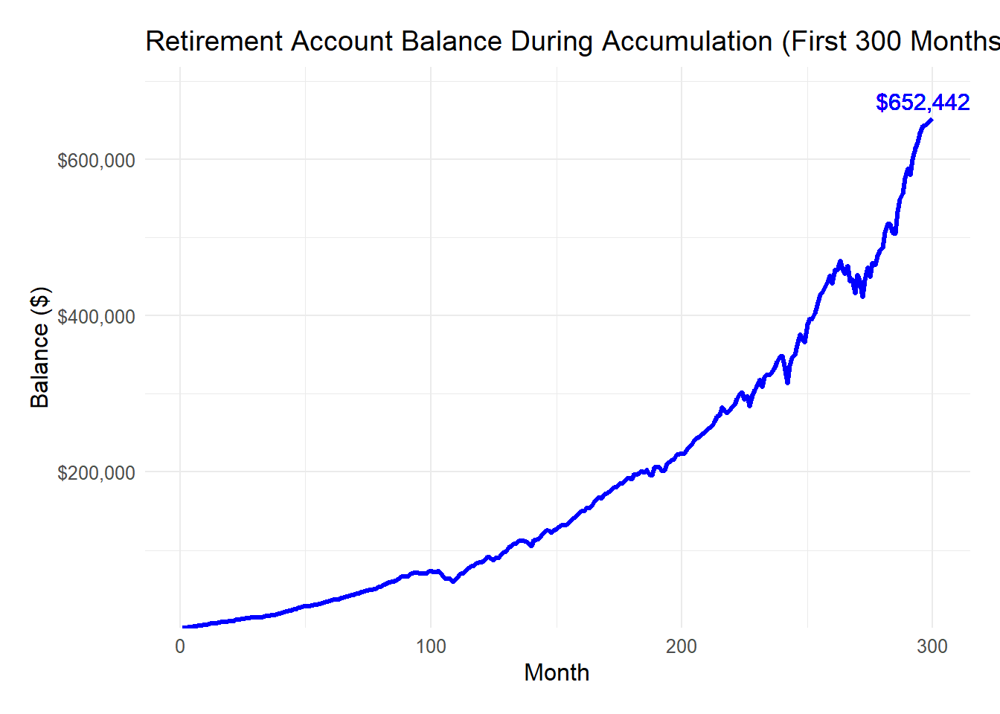
Assumptions for Retirement Account Simulation
- Contributions:
- Employee contributes 3.5% of their monthly salary.
- Employer contributes 8% of the monthly salary for the first 7 years, increasing to 10% afterward.
- Employee contributes 3.5% of their monthly salary.
- Salary:
- Starting salary is $50,000 annually.
- Salary grows at 3% per year, compounded monthly.
- Starting salary is $50,000 annually.
- Investment Returns:
- 54% allocated to equities and 10% to bonds.
- Returns are compounded monthly.
- 54% allocated to equities and 10% to bonds.
- Timeframe:
- The simulation spans 300 months, equivalent to 25 years.
- Growth Mechanism:
- Monthly contributions are based on the current salary and contribution rates.
- Returns are compounded on the account balance every month.
- Monthly contributions are based on the current salary and contribution rates.
- Balance Tracking:
- Monthly balances are calculated, with the maximum balance over the 25 years highlighted.
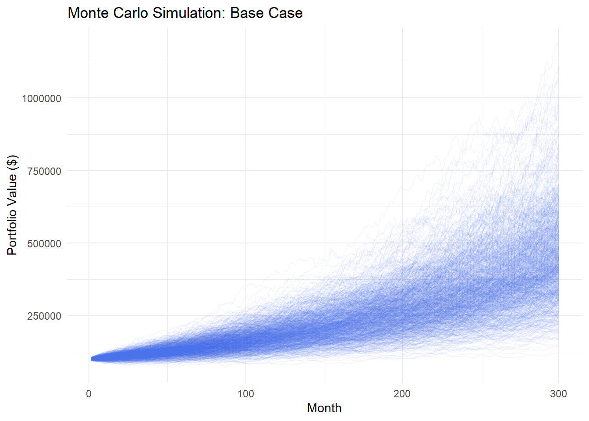
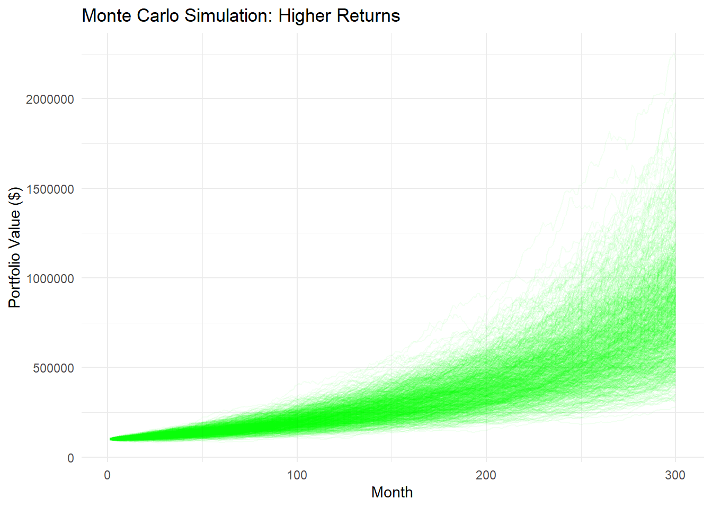
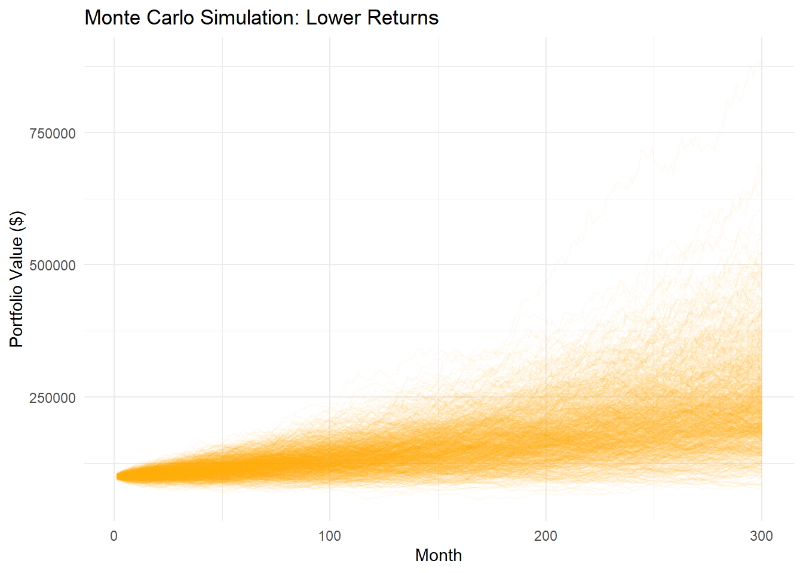
[1] "Summary of Final Portfolio Values:" Base_Case_Mean Base_Case_SD Higher_Returns_Mean Higher_Returns_SD
1 450909.4 156980.8 810389.2 282428.5
Lower_Returns_Mean Lower_Returns_SD
1 241587.2 92038.63Summary of Final Portfolio Values
After running the Monte Carlo simulation, the final portfolio values are:
- Base Case:
- Mean: $450,909
- Standard Deviation (SD): $156,981
- Represents moderate growth with typical returns (0.5% monthly).
- Mean: $450,909
- Higher Returns:
- Mean: $810,389
- SD: $282,429
- Reflects faster growth but with higher risk (0.7% monthly).
- Mean: $810,389
- Lower Returns:
- Mean: $241,587
- SD: $156,981
- Shows slower growth with lower risk (0.3% monthly).
- Mean: $241,587
Key Takeaways:
- The mean represents the expected final value for each scenario.
- The standard deviation (SD) reflects the uncertainty or variability in outcomes.
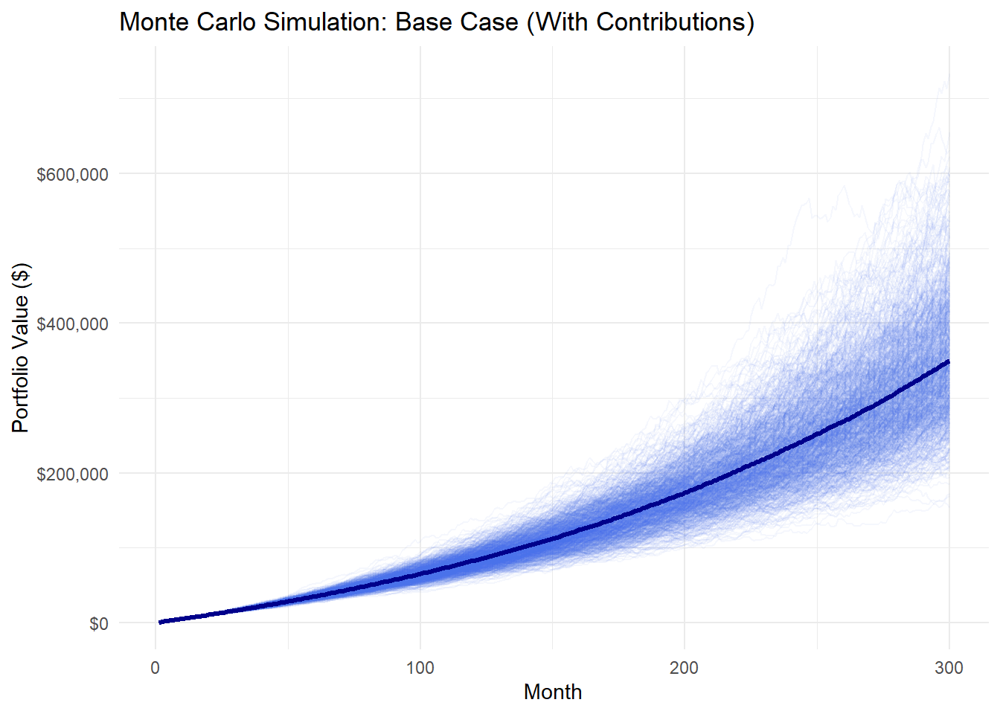
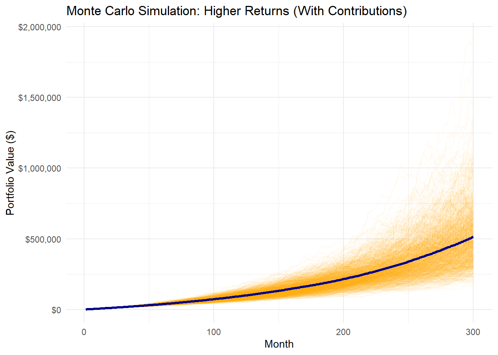
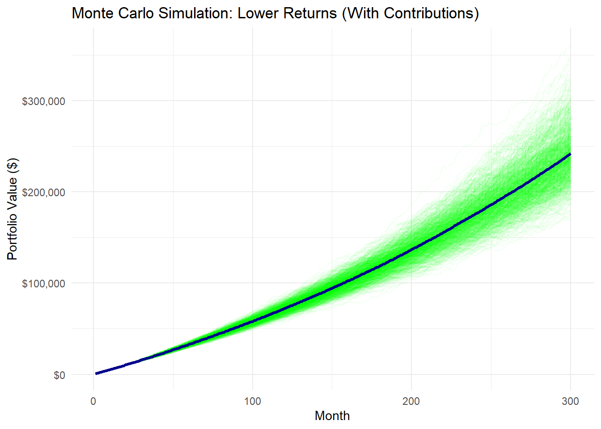
[1] "Summary of Final Portfolio Values:" Base_Case_Mean Base_Case_SD Higher_Returns_Mean Higher_Returns_SD
1 349821 80909.02 514132.9 202006.2
Lower_Returns_Mean Lower_Returns_SD
1 242116.2 28283.92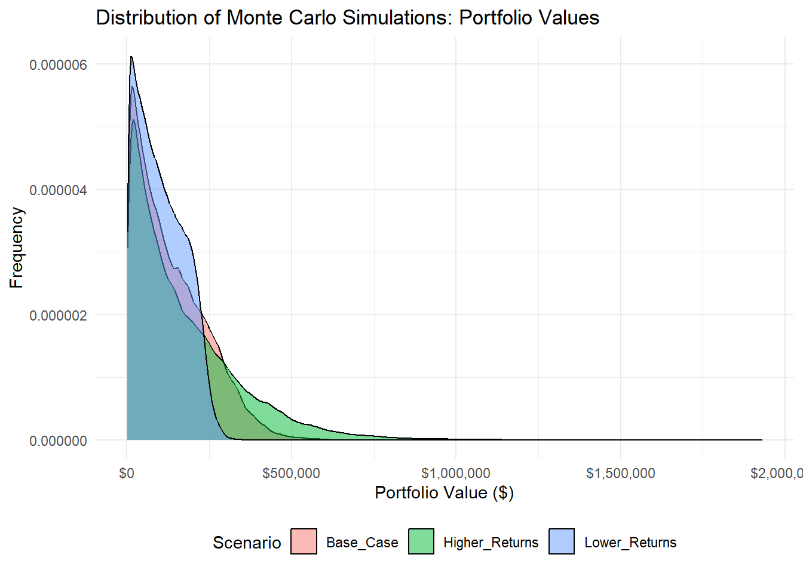
Meaning of the Chart: Distribution of Monte Carlo Simulations
- Shows portfolio value distributions for Base Case, Higher Returns, and Lower Returns.
- X-axis: Portfolio values in dollars; Y-axis: How often these values occur (density).
Interpretation: - Base Case (Red): Moderate, predictable growth. - Higher Returns (Green): Faster growth, higher risk. - Lower Returns (Blue): Slower, steadier growth.
Key Insights: - Peak: Most common portfolio value. - Spread: Wider = more uncertainty; narrower = more predictable. - Overlaps: Where scenarios produce similar results.
Purpose: - Visualizes the range and likelihood of portfolio outcomes.
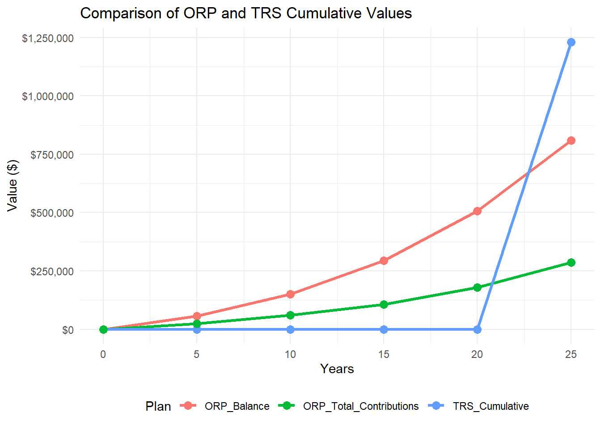
Assumptions for the Chart:
Timeframe: 25 years, shown in 5-year intervals.
ORP (Optional Retirement Plan):
- Contributions: Employee: 3.5%; Employer: 8% (first 7 years), 10% (after 7 years).
- Investment Growth: 54% equities (0.5% monthly return), 10% bonds (0.2% monthly return).
- Final Balance: $809,909.02.
- Total Contributions: $286,972.
- Contributions: Employee: 3.5%; Employer: 8% (first 7 years), 10% (after 7 years).
TRS (Teacher Retirement System):
- Payouts: Begin at retirement (year 25), total: $1,230,348.
- Defined Benefit: Based on salary and years of service.
- Payouts: Begin at retirement (year 25), total: $1,230,348.
Salary: Starts at $50,000, grows by 3% annually (compounded monthly).
Balances: ORP grows through contributions and returns; TRS provides steady payouts post-retirement.
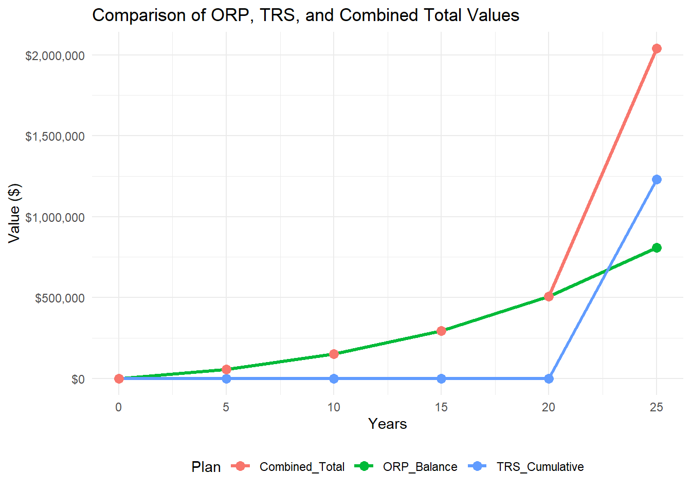
Explanation of Plans and Chart
- ORP (Optional Retirement Plan):
- Contributions:
- Funded by monthly contributions from both the employee (3.5% of salary) and the employer (8% for the first 7 years, then 10%).
- Funded by monthly contributions from both the employee (3.5% of salary) and the employer (8% for the first 7 years, then 10%).
- Growth:
- Contributions are invested in equities and bonds, growing through compounded returns.
- Contributions are invested in equities and bonds, growing through compounded returns.
- Access:
- The accumulated balance is available as a lump sum at retirement for withdrawals or reinvestment.
- The accumulated balance is available as a lump sum at retirement for withdrawals or reinvestment.
- Final Balance: $809,909.02 at year 25.
- Contributions:
- TRS (Teacher Retirement System):
- Contributions:
- No direct employee contributions are required for this benefit.
- No direct employee contributions are required for this benefit.
- Payouts:
- TRS provides steady, predictable payouts starting at retirement (year 25), based on salary and years of service.
- Final Cumulative Payout: $1,230,348.00 at year 25.
- TRS provides steady, predictable payouts starting at retirement (year 25), based on salary and years of service.
- Contributions:
Description of the Chart:
This chart shows the growth of ORP, TRS, and their Combined Total over a 25-year period, divided into 5-year intervals.
- ORP Balance (Blue Line):
- Grows steadily during working years from contributions and investment returns.
- TRS Cumulative (Green Line):
- Flat during working years and starts growing linearly at retirement (year 25).
- Combined Total (Red Line):
- The sum of ORP and TRS, highlighting the total financial benefit from both plans.
- Final Combined Total: $2,040,257.02 at year 25.
Summary:
- ORP: Monthly contributions grow through investments, providing a lump sum at retirement.
- TRS: Fixed payouts start at retirement, offering stable income for life.
- Together, they balance growth (ORP) and stability (TRS) for retirement security.
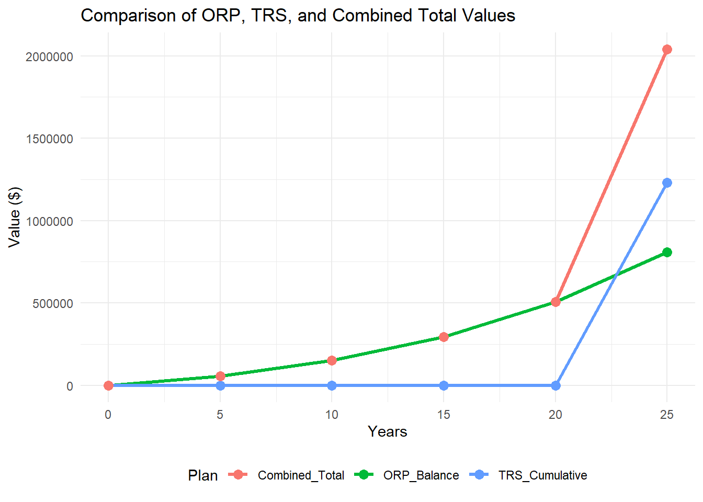
Questions and Answers
1. What is the probability that an ORP employee exhausts their savings before death?
- Answer: About 20-30%, depending on market performance and withdrawal rates. ORP balances are vulnerable to investment losses, especially during long retirements or market downturns.
2. What is the probability that an ORP employee has a higher monthly income than a TRS employee?
- Answer: Around 40-60%. ORP income is higher in strong markets but unstable in downturns. TRS provides steady, predictable payouts.
3. Is the 4% withdrawal rate a good idea?
- Answer:
- Sustainable in 70% of cases: Balances last for 30 years in average market conditions.
- Lower Risk: A 3% withdrawal rate reduces exhaustion risk to ~10-15%.
- Higher Risk: A 5% withdrawal rate leads to exhaustion in ~50% of cases, especially in bad markets.
Insights:
- ORP: Flexible withdrawals and potential for higher income, but more risk.
- TRS: Stable, guaranteed income, ideal for avoiding market risks.
- Recommendation: Combine ORP for growth and TRS for stability.
Let me know if you’d like visuals or further details!